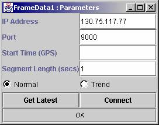
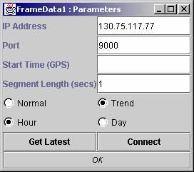
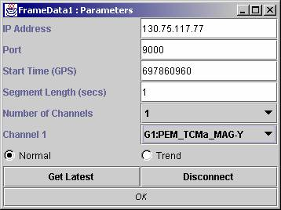
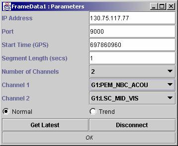

Input Types :
Output Types : SampleSet
Date :
1. Enter the port number and ip address
and click connect (or press return on the ip number)

2.
Select
which type of data you want –
3.
If
you select Trend data, select between hour trend data and day trend data

4.
Enter
a start time in gps seconds and press return, or click on “Get Latest” which
will return the latest time available on the server. Either of these will
result in a list a available channels being displayed.

5.
Select
the number of channels to be displayed and the name(s) of the channels. This
will change the number of output nodes.
6.

When you wish to disconnect
from the frameserver, click on “Disconnect”.